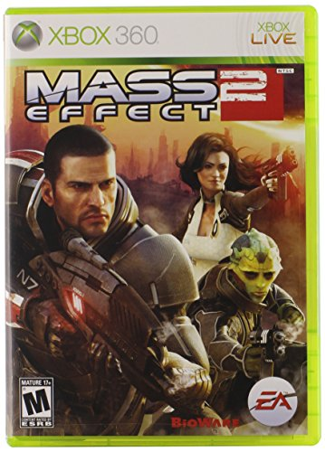

MASS EFFECT 2
Mass Effect 2 es un videojuego de rol de acción desarrollado por BioWare Edmonton, con la asistencia de BioWare de Montreal, y publicado por Electronic Arts. El juego es la secuela de Mass Effect, y fue lanzado para Microsoft Windows y Xbox 360 en América del Norte el 26 de enero de 2010, en Australia el 28 de enero de 2010 y en Europa el 29 de enero de 2010. También salió a la venta para PlayStation 3 el 18 de enero de 2011 en Estados Unidos y el 21 del mismo mes y año en Europa. Es una de las sagas de videojuego más exitosas por su gran trama y jugabilidad.